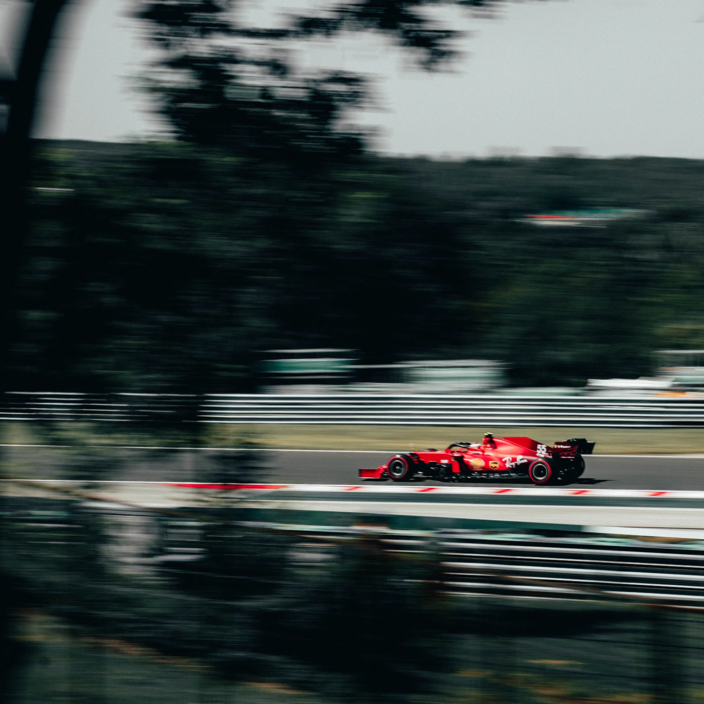

When I am not working or studying, I love balancing my time between active outdoor adventures and relaxing indoor activities. Whether I am catching an intense game on the weekend, exploring fresh trails in nature, or spending an afternoon shopping for new style additions, my hobbies keep me grounded and energized.
Hiking gives me a chance to step away from screens and appreciate scenic views, while watching live sports provides high energy and excitement. Combining that with casual shopping trips with friends makes for a well-rounded routine where I can stay active, unwind, and treat myself to new finds.
